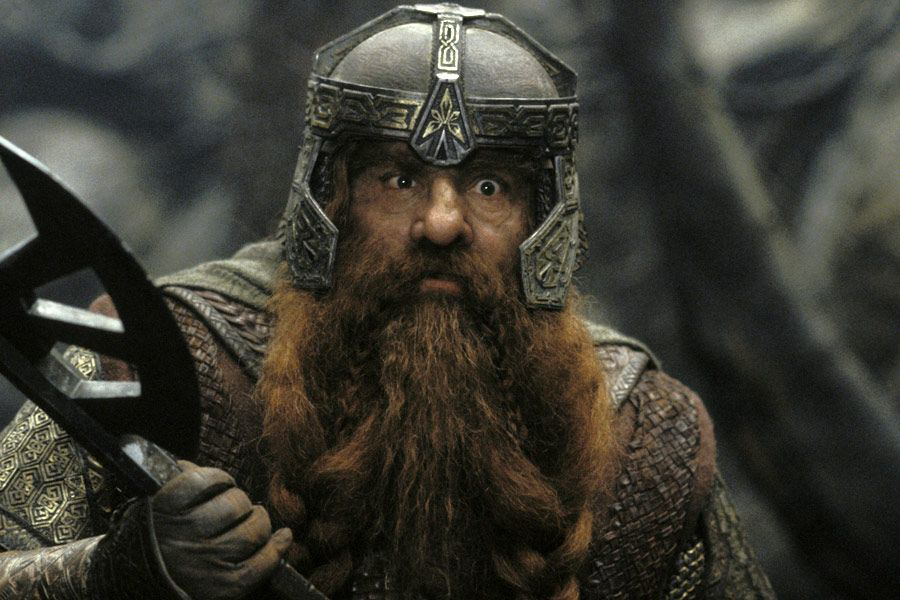

Ги́мли (англ. Gimli) — гном из королевского рода Дурина, сын Глоина и племянник Оина. Единственный представитель своего народа в рядах Братства Кольца.
Гимли, 3019 год Т.Э.
Внешность
Известно, что у Гимли были тёмные глаза, а также он как и все гномы маленького роста, у него длинная рыжеватая борода с усами и волосы такого же цвета. Гимли носит доспехи и кольчугу, а также секиру.
Происхождение имени
Точно не известно, какое значение носит имя Гимли. По мнению самого Толкина, оно может происходить от поэтического слова «gim», которое означало в древнескандинавской поэзии «огонь». В соответствии с гномьей традицией Средиземья, имя «Гимли» является «внешним» именем, так как происходит из северного (человеческого) языка и не является настоящим именем на кхуздуле (свои подлинные имена гномы хранили в секрете от представителей иных рас). Впервые имя «Гимли» упоминается в «Истории о Тинувиэль» – самой ранней версии приключений Берена и Лутиэн, опубликованной во второй части «Книги утраченных сказаний»: его носил пожилой эльф, бывший пленником в кухне Тевильдо, Короля Котов, вместе с Береном. Лишь впоследствии оно было дано гному во «Властелине колец».
Гимли находит могилу своего родича Балина, который был убит орками